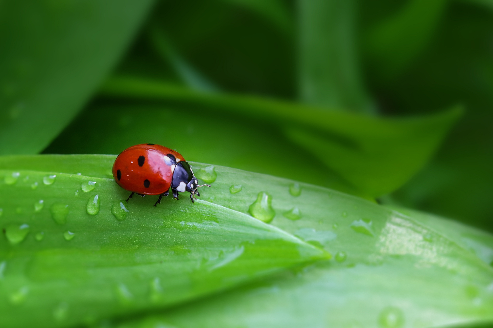
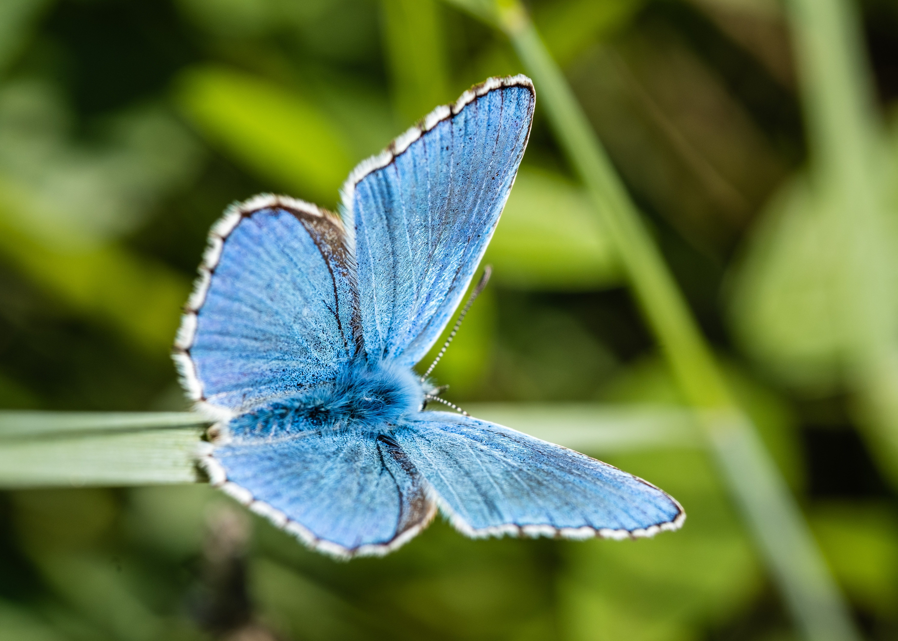
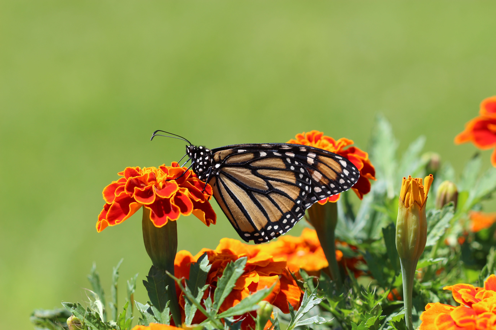
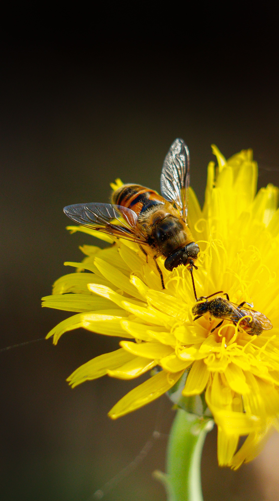
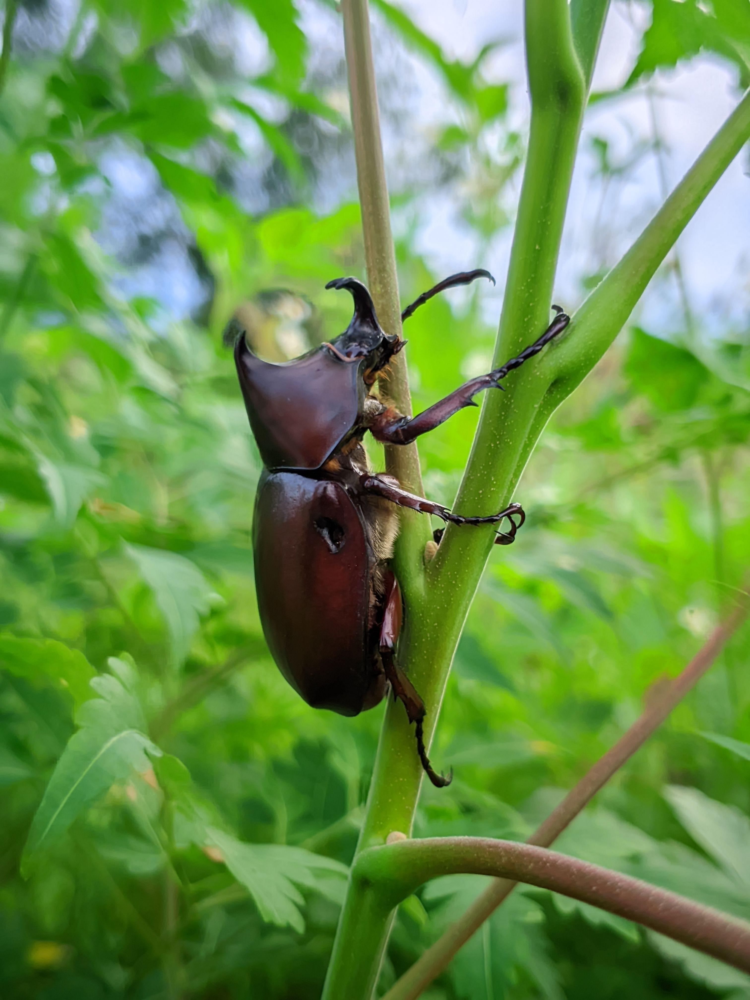
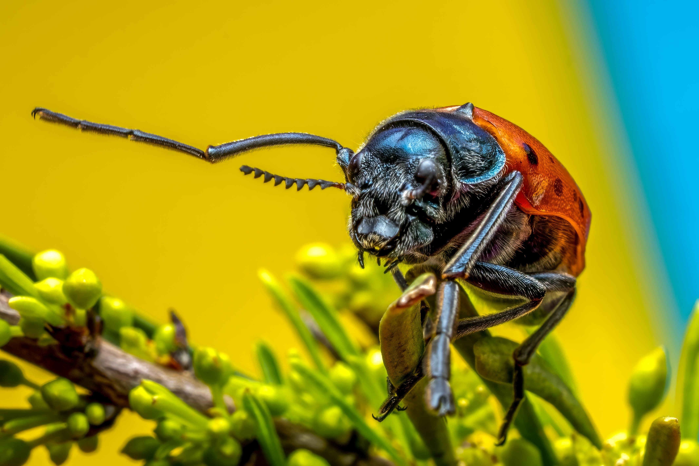

What are Insects?
Insects belong to the class Insecta within the arthropod phylum. They are invertebrates characterized by a hard external skeleton (exoskeleton), a three-part body structure (head, thorax, and abdomen), three pairs of jointed legs, and compound eyes.
Representing over half of all known living organism species, insects form the fundamental baseline of global food webs and ecosystem functionality.
Key Characteristics
1. Three-Part Anatomy: Their bodies are divided cleanly into a head for sensory input, a thorax for locomotion (legs and wings), and an abdomen for digestion and reproduction.
2. Protective Exoskeleton: Built from a tough material called chitin, their outer shell shields them from injury and prevents moisture loss.
3. Complete Metamorphosis: Many insects undergo complex life cycles shifting drastically through egg, larva, pupa, and adult forms.

Meet the Insects
While millions of distinct insect species exist worldwide, here are four prominent and vital representatives.

Monarch Butterfly
Famed for its multigenerational continental migration cycle and brilliant orange-and-black patterned wings.

Honeybee
A crucial social pollinator that lives in structured colonies, producing honey and sustaining global plant life.

Dragonfly
An agile aerial hunter boasting exceptional vision and unmatched acrobatic flight capabilities over wetlands.

Hercules Beetle
One of the largest insects on Earth, capable of lifting massive multiples of its own body weight.

Where Do Insects Live?
Insects are the most adaptable terrestrial animals on Earth, having successfully colonized every continent, including parts of Antarctica, across nearly all land and freshwater habitats.
What Do Insects Eat?
Insect diets are exceptionally diverse, driving global plant pollination, decomposition, and food webs.
Herbivores & Pollinators
Butterflies, bees, and aphids feed on plant nectar, pollen, leaves, and wood tissues, directly shaping plant reproduction.
Carnivores & Predators
Dragonflies, praying mantises, and ladybugs hunt other insects to control pest populations naturally.
Detritivores & Scavengers
Dung beetles, ants, and termites break down decaying organic matter, recycling essential nutrients back into the soil.
💡 Did You Know?
Insects outweigh all human beings on Earth combined by a massive margin, outnumbering us millions to one!
Honeybees communicate precise flower locations to their hive mates by performing an intricate figure-eight "waggle dance."
Fleas can jump up to 200 times the length of their own bodies—equivalent to a human leaping over a 30-story building!
Quick Facts
1 Million+
Described insect species (and counting)
Global Terrestrial
Inhabiting every corner of the globe
Exoskeleton
Chitinous protective outer shell structure